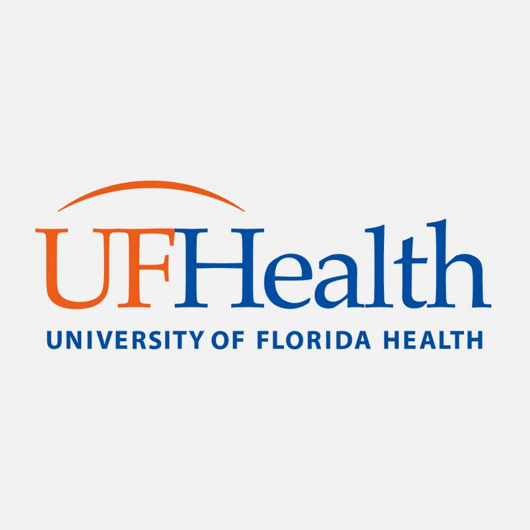
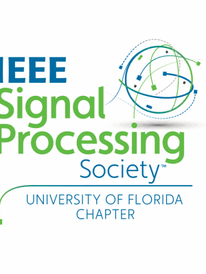

Jan 2026 – May 2026Jupiter, FL

Undergraduate Researcher
Nettles Lab, UF Scripps Institute
- Contributed to NIH-funded computational drug discovery research on the glucocorticoid receptor, applying deep learning to resolve receptor conformational dynamics.
- Adapted the lab’s streaming featurization pipeline, writing and tuning key portions of it, and ran it on UF’s HiPerGator cluster, converting molecular dynamics trajectories into learning-ready tensors across 17 receptor/ligand systems.
- Trained a VAMPnet (PyTorch/deeptime) mapping 2,952-dimensional backbone coordinates to three metastable conformational states, reaching a VAMP-2 score of 2.87 against a max of 3.0, validated with a Chapman–Kolmogorov test.
Sep 2025 – PresentGainesville, FL

Research Board, Project Lead
IEEE Signal Processing Society, UF Student Chapter
Plato’s Cave: Scientific Paper Verification
- Implemented node and edge scoring algorithms and trust-gating mechanisms for a knowledge-graph paper-verification system; curated a 149-paper evaluation dataset and ran 832 sampled DAGs through 6,480 scoring trials.
- Co-authored the resulting paper, accepted to the AAAI Spring Symposium (AAAI-MAKE) 2026 (see Research).
Aude: Binaural Audio Scene Analysis · Project Lead
- Founded and lead a five-member research group building biologically plausible binaural audio scene analysis for real-world sound-source localization and separation.